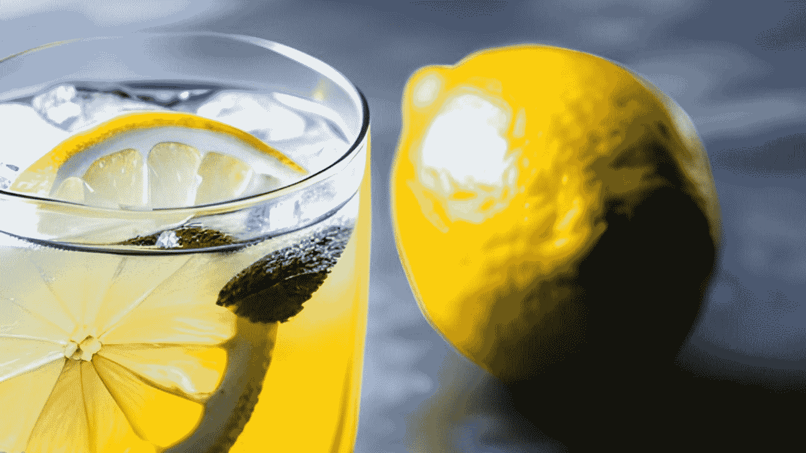
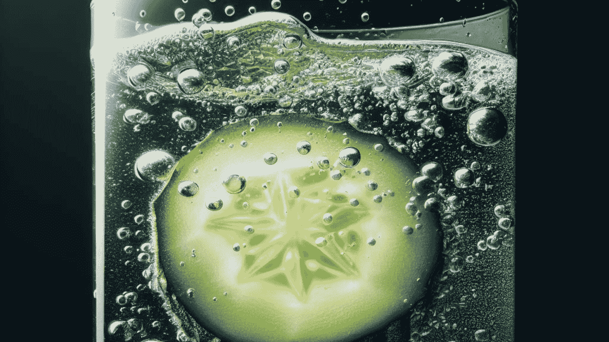

In a global constantly searching for natural treatments and holistic strategies to fitness, lemon water has emerged as a refreshing drink. The combination of easy ingredients, lemon and water, offers a myriad of benefits that cater to diverse elements of nicely-being. In this comprehensive manual, we delve into the benefits of incorporating lemon water into your daily recurring, addressing the ever-popular query: "Is lemon water top for you?".
Lemons are renowned for their superb nutritional profile. They are an brilliant source of diet C, a powerful antioxidant that supports the immune system, promotes skin fitness, and aids in collagen production. Additionally, lemons contain different critical vitamins and minerals, such as vitamin B6, potassium, and folate, which make contributions to ordinary power.
Enhancing the conventional lemon water formulation, cucumber water offers a clean twist. Cucumbers are not handiest hydrating but also low in energy, making them a super addition on your wellness habitual. The blessings of cucumber water consist of stepped forward hydration, which is important for diverse physical functions, from digestion to preserving healthful pores and skin.
When lemon and cucumber be a part of forces in a pitcher of water, the result is a lovely fusion of flavors and health blessings. Lemon's vitamin C content complements the hydrating homes of cucumber, creating a rejuvenating drink which could quench your thirst at the same time as nourishing your frame.
One of the important thing blessings of lemon water is its potential to resource in detoxing. Lemon water stimulates liver characteristic, supporting your body flush out pollutants extra efficiently. This can leave you feeling revitalized and may be especially beneficial if you've had a duration of indulgence.
If you're thinking how to make lemon water paintings for weight control, you're now not on my own. Lemon water can sell a sense of fullness, potentially decreasing calorie intake. Moreover, it may improve metabolism due to its high nutrition C content material, helping weight reduction efforts.
Digestive fitness is vital for basic properly-being, and lemon water can play a position in promoting a healthy digestive device. The acidity of lemon juice may additionally stimulate the production of digestive enzymes, assisting in the breakdown of food and stopping indigestion.
Cucumber water takes this a step further with its fiber content. Fiber helps normal bowel movements and can help save you constipation. The mixture of lemon and cucumber in water is, therefore, a digestive powerhouse.
Many humans wonder approximately the blessings of drinking lemon water in the morning. Starting your day with a pitcher of lemon water can kickstart your metabolism and provide a burst of power. It also can assist stability your frame's pH ranges and alkalize your gadget, which some trust is conducive to good fitness.
To make lemon water in the morning, without a doubt squeeze the juice of half of a lemon into a tumbler of warm water. You can add a hint of honey for sweetness, as honey and lemon water blessings consist of soothing a sore throat and imparting a further antioxidant enhance.
Hot lemon water is a comforting beverage, particularly in the course of the chillier months. It can help relieve congestion, soothe a sore throat, and offer warmth and comfort.
Combining the goodness of each lemon and honey creates a relaxing and immune-boosting drink. This concoction is regularly used to alleviate bloodless and flu signs.
While lemon water can be fed on at any time of the day, a few choose it earlier than bedtime. It can aid in digestion and sell rest, making it a popular choice for a calming nighttime ritual.
As stated earlier, lemon water inside the morning is an notable way to kickstart your day, raise metabolism, and decorate hydration after a night time's relaxation.
For the ones on a weight reduction journey, lemon water may be a treasured best friend. Its herbal diuretic houses may additionally assist lessen water weight, and the sensation of fullness it offers can lessen overeating.
To harness the weight loss advantages of lemon water, put together it as follows: Squeeze the juice of 1/2 a lemon into a tumbler of heat water. Add a pinch of cayenne pepper for an additional metabolism increase, and drink it earlier than food.
Lemon water isn't simply top to your inner health; it can additionally paintings wonders on your skin. The diet C in lemons promotes collagen manufacturing, helping to maintain your skin younger and colourful.
Lemon water's benefits expand to your hair as nicely. It can help reduce dandruff and promote a healthful scalp, potentially main to shinier and greater lustrous locks.
In conclusion, the benefits of drinking lemon water are numerous and versatile. Whether you enjoy it in the morning, at night, or throughout the day, lemon water can be a valuable addition to your wellness routine. The combination of lemon's vitamin-rich goodness and cucumber's hydration prowess creates a harmonious drink that caters to your overall health and vitality.
So, why not embrace this simple yet powerful drink and experience the transformative effects of lemon water for yourself? Remember, your journey to optimal health can begin with a single glass of lemon water. Cheers to your well-being!
For further insights into holistic wellness, nutrition, and lifestyle, explore our recommended sources below: